국민대학교 2027 면접 가이드북
국민대학교 면접에서 실제로 나온 질문과, 내 생기부에서 질문을 뽑는 전환 규칙. 선배 후기 2017~2026 관측과 2027 공식 요강으로 재구성한 현학적 연구소 편집본.
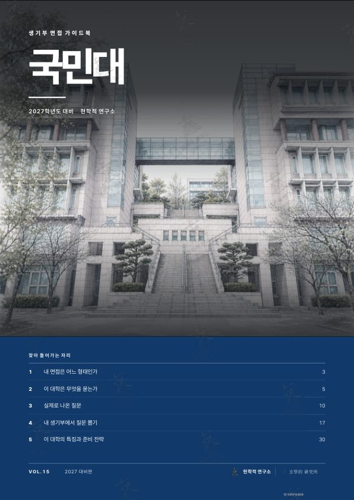
국민대학교 2027 면접 가이드북
33,000원부가세 포함, 보안 리더 열람 1개월- 실제 질문선배 후기 2017~2026 관측, 유형별 수록
- 전환 규칙내 생기부에서 질문 뽑기, 꼬리질문까지
- 전형 분석전형별 제원, 형태 판정표
- 형태PDF, 브라우저 보안 리더
- 인쇄계정당 3회, 원본 파일 비제공
결제 후 마이페이지에서 브라우저 보안 리더로 바로 열림. 열람 기간은 구매일부터 1개월. 아직 열지 않은 권은 공급받은 날부터 7일 이내 청약철회 가능. PDF 소장판은 워터마크 파일을 발급해 소장.
지면 미리보기
판매본 그대로의 지면. 본문은 흐림 처리, 구매 후 전체가 선명하게 열립니다.
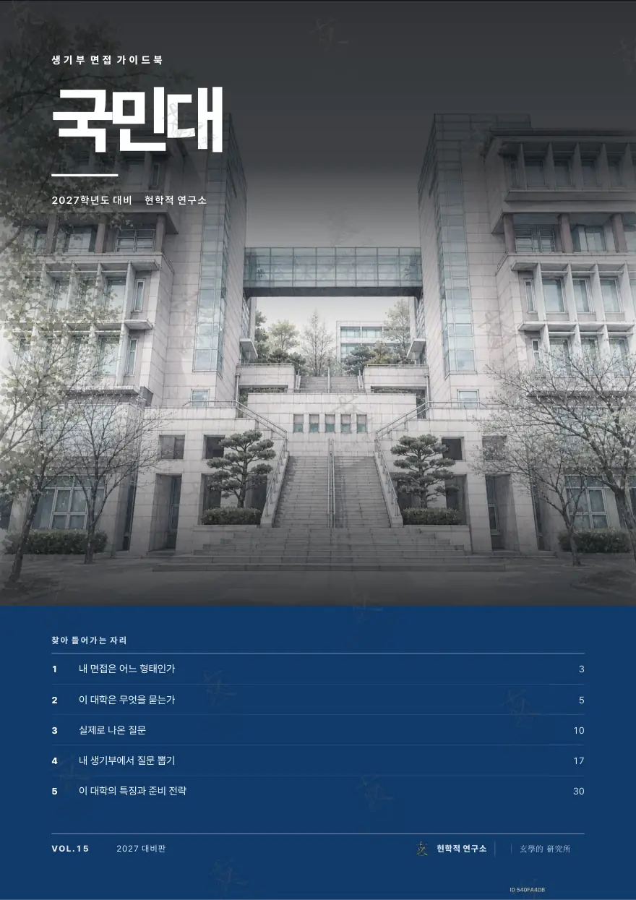
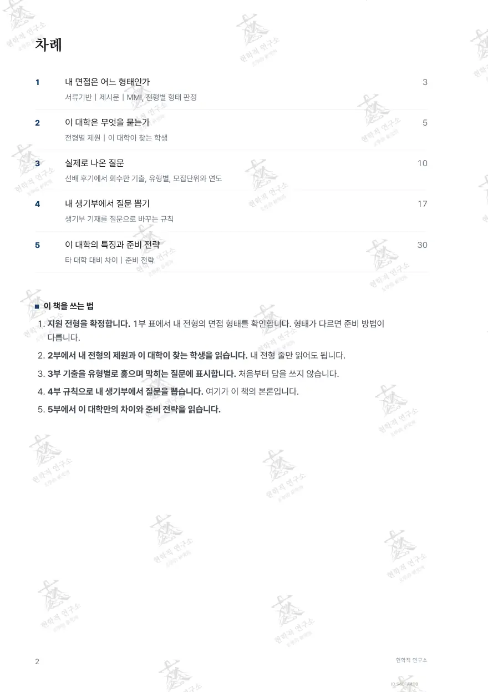
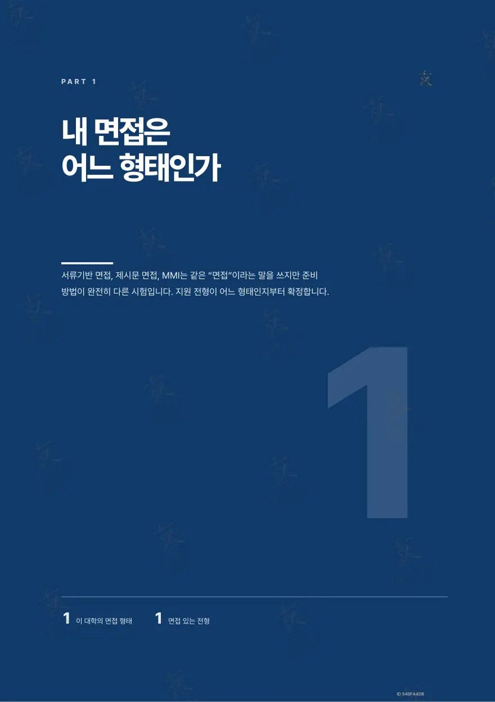
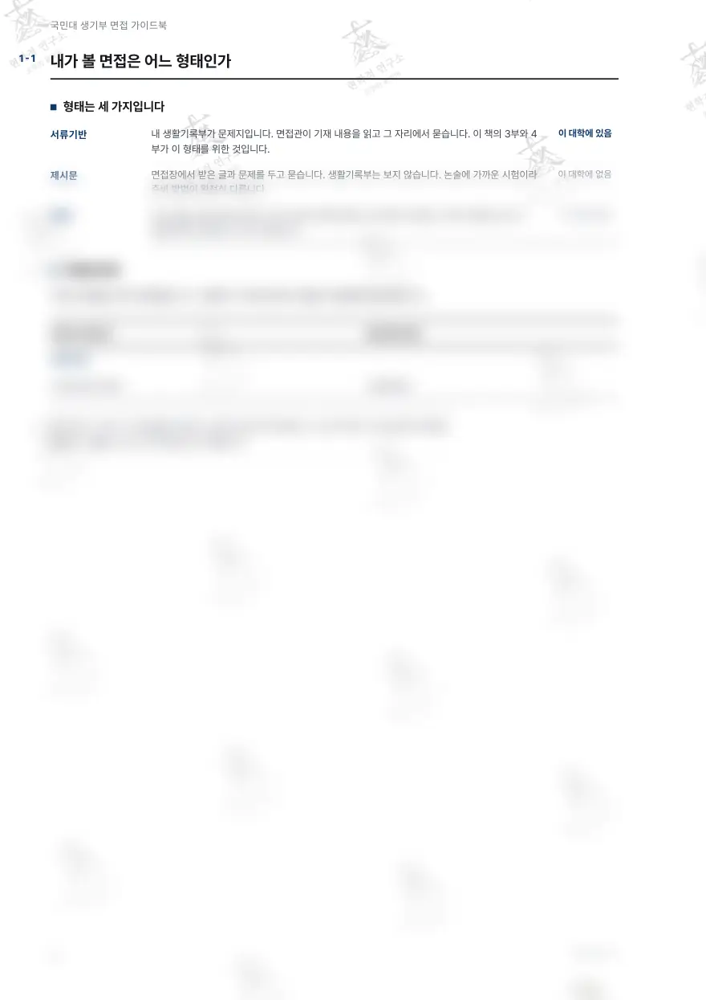
구매 후 선명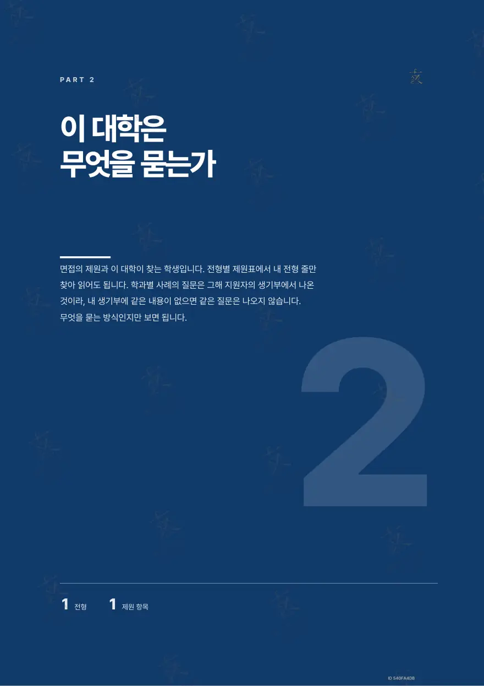
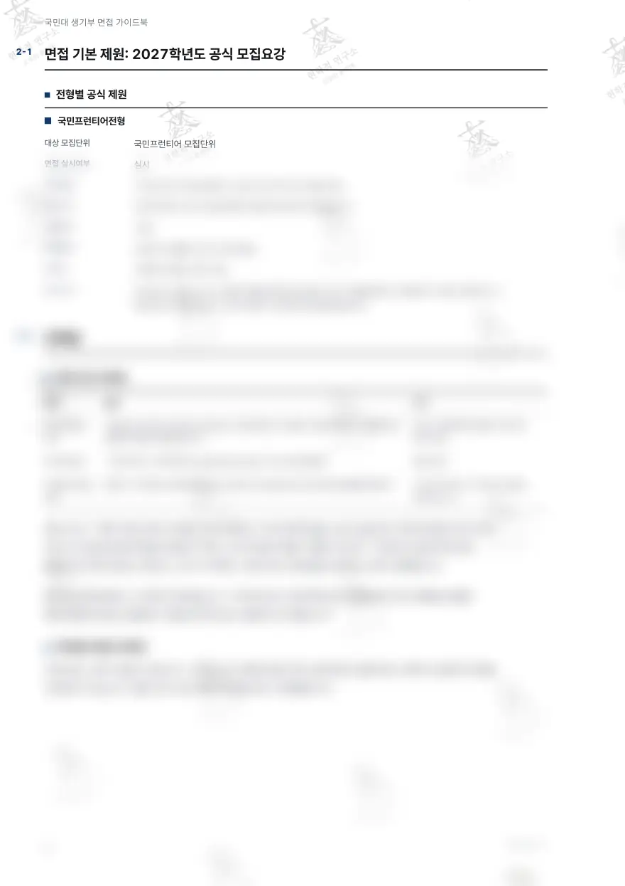
구매 후 선명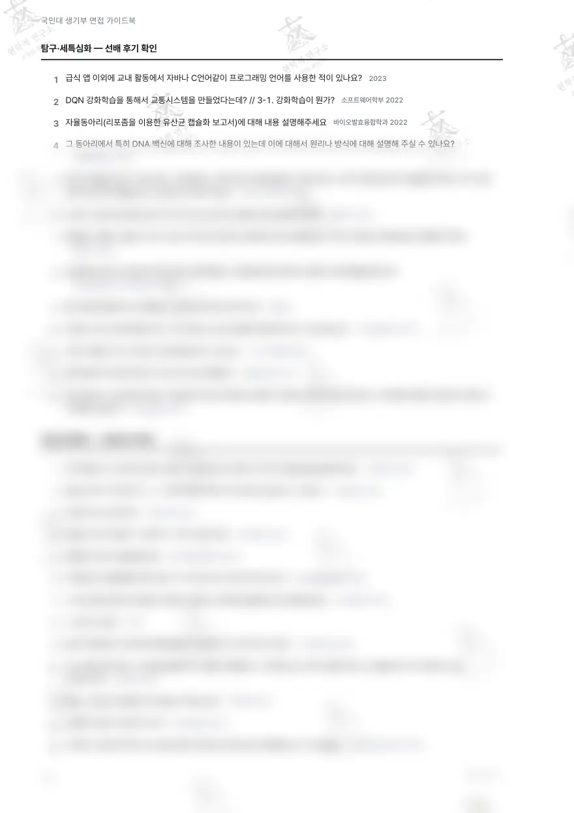
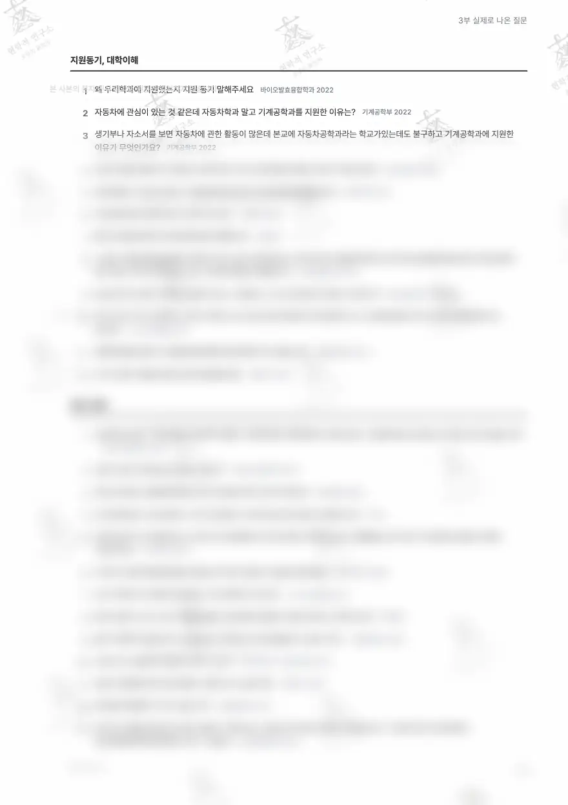
구매 후 선명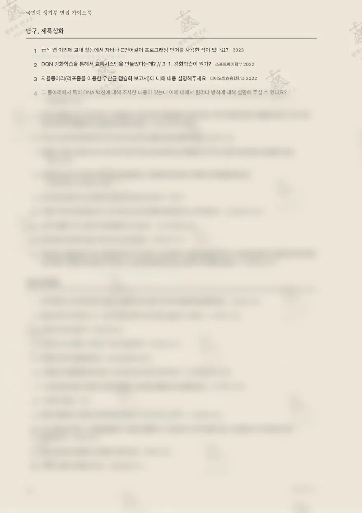
구매 후 선명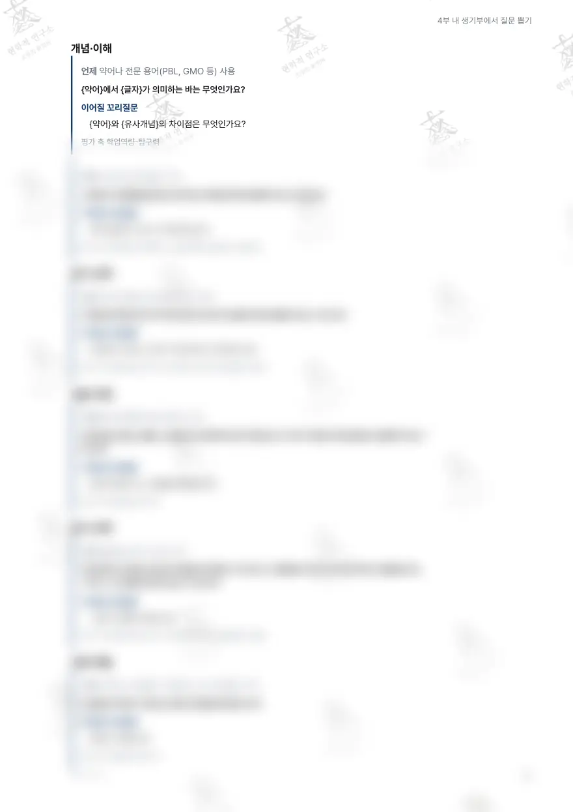
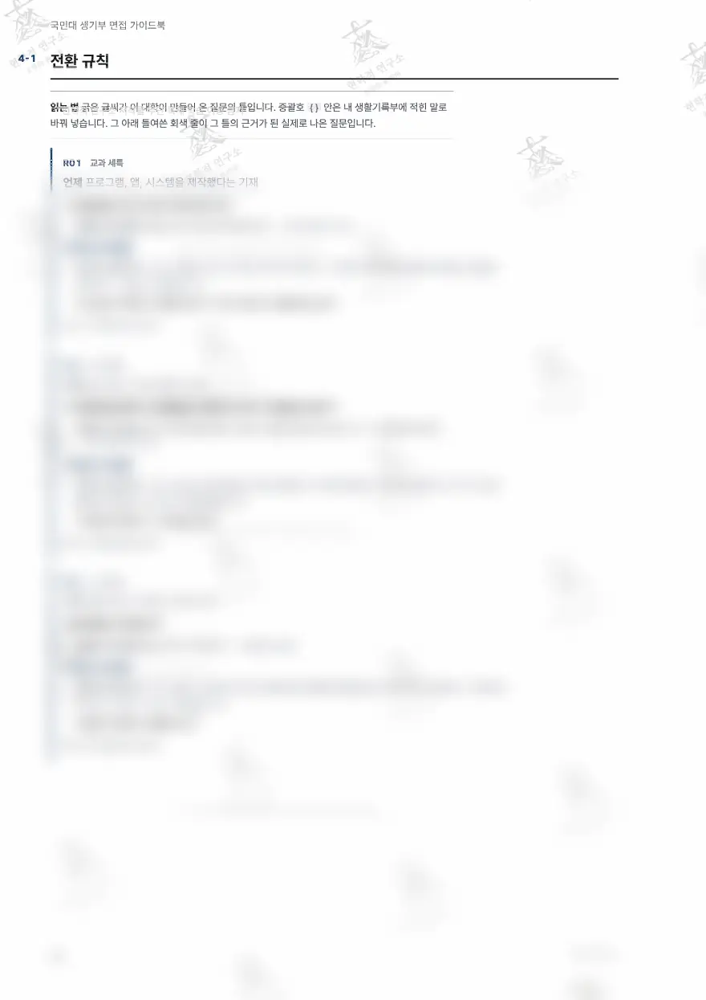
구매 후 선명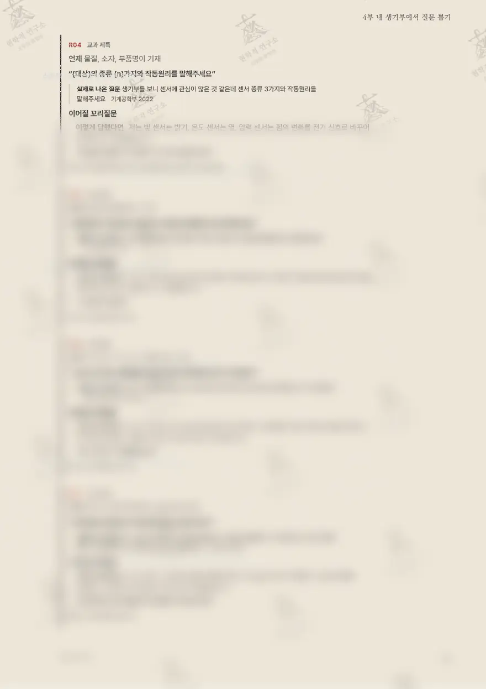
구매 후 선명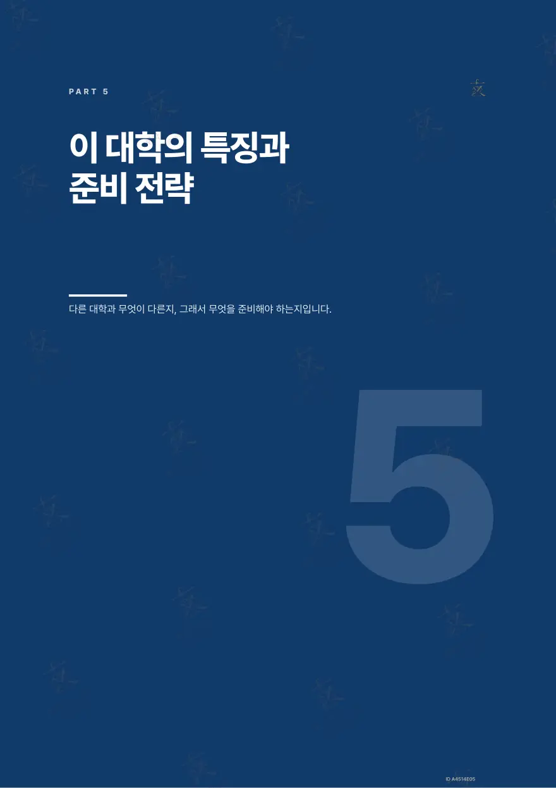
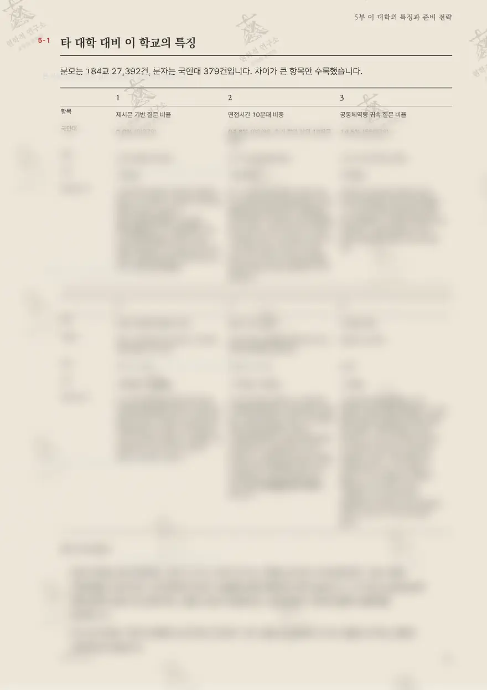
구매 후 선명각 지면 아래 숫자는 실제 면 번호입니다. 워터마크는 열람 계정마다 다르게 찍힙니다.
다섯 부로 끝나는 구성
표지의 차례 그대로입니다.
내 면접은 어느 형태인가
서류기반｜제시문｜MMI, 전형별 형태 판정
이 대학은 무엇을 묻는가
전형별 제원｜이 대학이 찾는 학생
실제로 나온 질문
선배 후기에서 회수한 실제 질문, 유형별, 모집단위와 연도
내 생기부에서 질문 뽑기
생기부에서 질문 뽑는 전환 규칙
이 대학의 특징과 준비 전략
타 대학 대비 차이｜준비 전략
이 대학의 면접, 판정부터
1부와 2부가 하는 일. 형태가 다르면 준비 방법이 다릅니다.
- 국민프런티어서류확인형
- 국제인재(2027 신설)서류확인형
- 알고리즘우수자(2027 신설)서류확인형 + 과제수행 요소 혼재 가능
- 기회균형Ⅰ, 성인학습자서류확인형
- 특기자인적성형(대학 고유 용어 = 기본소양평가)
- 재외국민(조형)작품집 기반 면접(대학 고유 분류)
질문 유형
실제로 나온 질문을 이 유형들로 나눠 싣습니다.
맛보기
유형별 첫 수록 질문.
- 지원동기, 대학이해
왜 우리학과에 지원했는지 지원 동기 말해주세요
- 진로, 장래
진로희망사항이 1학년 때는 빅데이터 전문가, 2학년 때는 건축공학자 3학년 때는 기계공학자로 바뀌는데 이러한 이유가있습니까?
- 탐구, 세특심화
급식 앱 이외에 교내 활동에서 자바나 C언어같이 프로그래밍 언어를 사용한 적이 있나요?
- 전공지식확인
생기부를 보니 센서에 관심이 많은 것 같은데 센서 종류 3가지와 작동원리를 말해주세요
전체 질문과 유형 해설은 책 본문에.
전환 규칙, 이 책의 본론
생기부의 기재 한 줄이 어느 질문으로 바뀌는지. 규칙마다 실제로 나온 질문과 꼬리질문이 붙습니다.
언제 프로그램, 앱, 시스템을 제작했다는 기재
언제 알고리즘, 기법 이름이 기재
언제 실험 장치나 측정 도구명 기재
규칙의 질문 틀과 실제 질문, 꼬리질문은 본문에서. 위 미리보기 지면에 흐림 처리로 실려 있습니다.
5부 준비 전략
이 대학만의 차이에서 나온 전략. 제목만 싣습니다.
- 01생기부 전 항목을 “용어 사전”으로 재편합니다
- 02답변 길이를 30초에서 45초로 고정 훈련합니다
- 03성적 방어 스크립트를 과목 단위로 미리 만듭니다
- 04갈등과 협업 사례 3개를 역할 중심으로 준비합니다
- 05지원 학과 인재상 문장을 가이드북에서 찾아 자기 역량과 연결합니다
- 06국민대 내 인접 학과와의 차별 답변을 만듭니다
- 07대기실 무자료 상황을 전제로 암기 리허설을 합니다
- 08꼬리 2단까지만 대비하되 압박 어조에 대한 태도를 훈련합니다
전략의 제목 일부입니다. 본문과 근거는 책에서.
자주 묻는 질문
국민대학교 면접과 이 가이드북에 대해.
국민대학교 국민프런티어 면접은 어떤 형태인가요?
국민프런티어, 국제인재는 모두 서류기반 면접입니다. 1부 판정표에서 지원 전형의 면접 형태를 확인합니다.
국민대학교 면접 기출은 몇 문항 실려 있나요?
선배 후기 2017~2026년에서 회수한 기출 143문을 32개 모집단위, 13개 유형으로 나눠 3부에 실었습니다.
생기부에서 질문을 뽑는 규칙은 몇 개인가요?
4부에 전환 규칙 60개가 있습니다. 규칙마다 생기부 기재 조건과 실제 질문, 꼬리질문이 붙습니다.
가격과 열람 기간은 어떻게 되나요?
보안 리더 열람판 33,000원, PDF 소장판 110,000원입니다. 열람 기간은 구매일부터 1개월, 인쇄는 권당 3회, 원본 파일은 제공하지 않습니다.
이 학교부터 담기
국민대학교 2027 면접 가이드북, 33,000원. 보안 리더 열람 1개월.